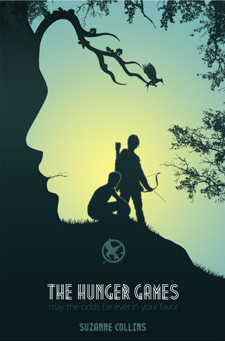
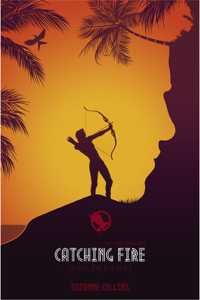
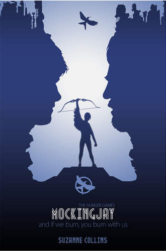
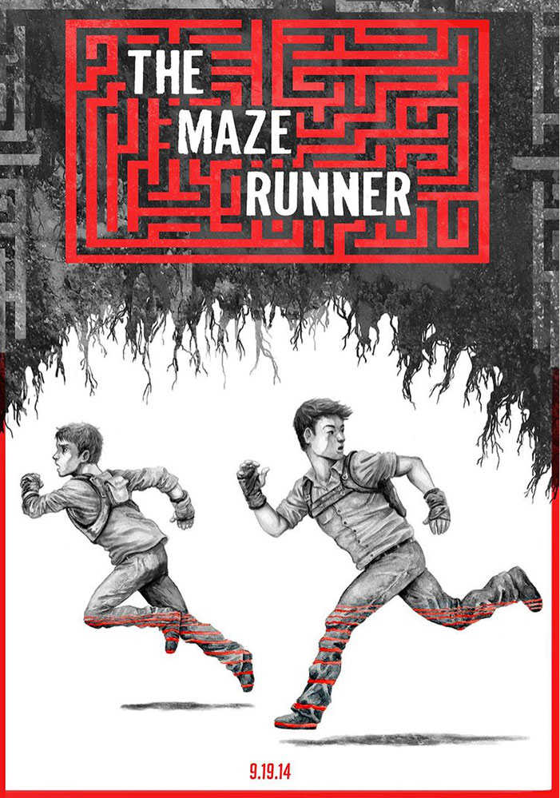
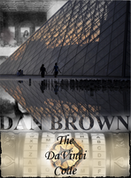
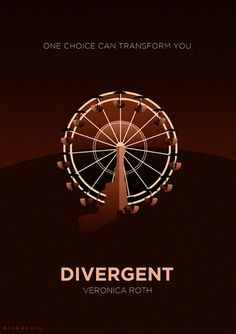

Action
Denne siden inneholder bøker i kategorien Action. Actionbøker har gjerne bøker som The Hunger Games, Divergent, The Maze Runner og mer. Vanlige normer ved denne sjangeren er en helt som skal enten redde verden, familien, hjembyen eller vennene sine. Det omhandler ofte vold og mord, samtidig som det også kan omhandle komplekse historier og fysikk, som Da Vinci Koden. En annen undersjanger her er også kampsport, der temaet handler om ære.
The Hunger Games
Denne boka er et action-fylt eventyr om Katniss Everdeen som bor I det 12. distriktet i et område kalt Panem. Årlig har de en tradisjon ved å kjøre gjennom et arrangement kalt Dødslekene, som er en utendørs arena der to deltakere fra hvert distrikt slåss til det kun er en igjen. Katniss må gå slåss for livet til seg selv og familien ved neste reaping...
The Hunger Games: Catching Fire
Dette er bok nummer to i serien, "The Hunger Games". Boken fortsetter der bok en slapp, ved at Katniss og Peeta vant de første dødslekene. Som salt i såret, må seierherrene gå på seiersturné gjennom distriktene og gå gjennom et manus som hyller dødslekene. Dette går ikke i deres favør, og de neste dødslekene er like rundt hjørnet..
The Hunger Games: Mockinjay
Dette er siste boka i "The Hunger games" serien. Katniss og Peeta overlevde enda en gang dødslekene, og en revolusjon er nå i gang. Hvem vil vinne, Capitol eller rebellene?
The Maze Runner
Thomas våkner i en heis uten minner om annet enn sitt navn. Han kommer opp i en innhegning som er umulig å komme ut av ved første øyekast. Thomas er heldigvis ikke alene, men de som en gruppe er heller ikke alene i den enorme labyrinten...
Da Vinci Koden
Liker du gåter og mystikk, er denne boka noe for deg. Robert Langdon er forfatter, og denne boka handler om nok en uforståelig kode som fører historien til den hemmelige Sion-ordenen...
Divergent
I likhet med boka 1984, er dette en bok om en spådd fremtid der alle er delt inn i forskjellige grupper. Beatrice Rice, også kjent som Tris, er litt utenom det vanlige, og må gjentatte ganger kjempe for livet.